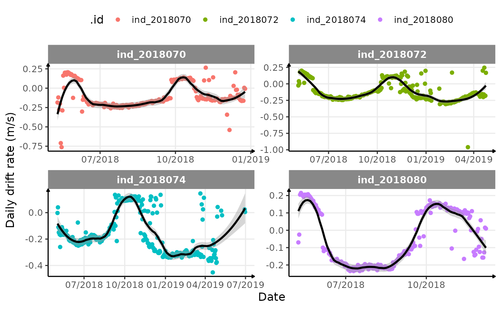
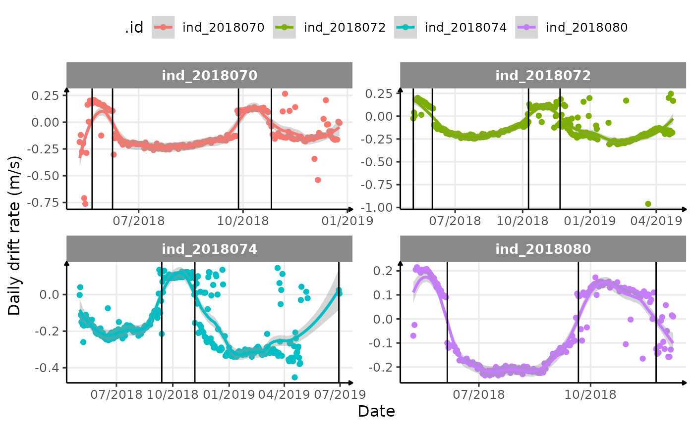

Changes in Buoyancy Detection
Joffrey JOUMAA
April 28, 2023
Source:vignettes/buoyancy_detect.Rmd
buoyancy_detect.RmdLet’s first import the data.
# load library
library(ontodive)
# load data
data_nes <- get_data("nes")
# rbind the list
data_2018 <- rbindlist(data_nes$year_2018)
# filter data
data_2018_filter <- data_2018[dduration < 3000, ]Daily median drift rate calculation
We then summarize the data by calculating the median of
driftrate for each day.
# calulate the median of driftrate for each day
median_driftrate <- data_2018_filter[divetype == "2: drift",
.(driftrate = quantile(driftrate, 0.5)),
by = .(date = as.Date(date), .id)
]
# display 10 random rows
median_driftrate[sample(.N, 10), ] %>%
sable(caption = "Median of daily drift rate by seals (10 random rows)")| date | .id | driftrate |
|---|---|---|
| 2018-11-20 | ind_2018074 | -0.2075 |
| 2019-01-08 | ind_2018074 | -0.3400 |
| 2018-08-10 | ind_2018074 | -0.2150 |
| 2018-06-10 | ind_2018070 | -0.1500 |
| 2018-06-27 | ind_2018070 | -0.2000 |
| 2018-11-15 | ind_2018074 | 0.0150 |
| 2018-08-26 | ind_2018072 | -0.1975 |
| 2018-08-16 | ind_2018072 | -0.2075 |
| 2018-07-07 | ind_2018072 | -0.2050 |
| 2018-10-16 | ind_2018070 | 0.1200 |
# display the result
ggplot(
median_driftrate,
aes(x = date, y = driftrate, col = .id)
) +
geom_point() +
labs(y = "Daily drift rate (m/s)", x = "Date") +
theme_jjo() +
theme(legend.position = "top")
Evolution of daily median drift rate across time for each seals
Model daily median drift rate using a LOESS
For each seal, we model the daily median drift rate using a local polynomial regression.
The only parameter to estimate was the span, it was chosen graphically
# display the result
ggplot(
median_driftrate,
aes(x = date, y = driftrate, col = .id)
) +
geom_point() +
geom_smooth(span = 0.25, col = "black") +
scale_x_date(date_labels = "%m/%Y") +
labs(y = "Daily drift rate (m/s)", x = "Date") +
theme_jjo() +
theme(legend.position = "top") +
facet_wrap(. ~ .id, scales = "free")

Evolution of daily median drift rate across time for each seals with a smooth
Detection of changes in buoyancy
We finally had to identify when the smooth function change sign.
# let's identity when the smooth changes sign
changes_driftrate <- median_driftrate %>%
.[, .(
y_smooth = predict(loess(driftrate ~ as.numeric(date), span = 0.25)),
date
), by = .id] %>%
.[c(FALSE, diff(sign(y_smooth)) != 0), ]
# display the result
ggplot(
median_driftrate,
aes(x = date, y = driftrate, col = .id)
) +
geom_point() +
geom_smooth(span = 0.25) +
geom_vline(data = changes_driftrate, aes(xintercept = date)) +
scale_x_date(date_labels = "%m/%Y") +
labs(y = "Daily drift rate (m/s)", x = "Date") +
theme_jjo() +
theme(legend.position = "top") +
facet_wrap(. ~ .id, scales = "free")

Evolution of daily median drift rate across time for each seals with a smooth and vertical lines to identify changes in buoyancy